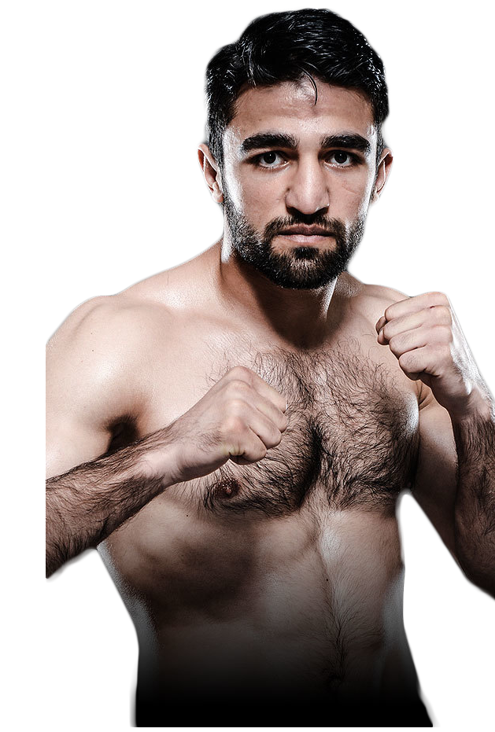
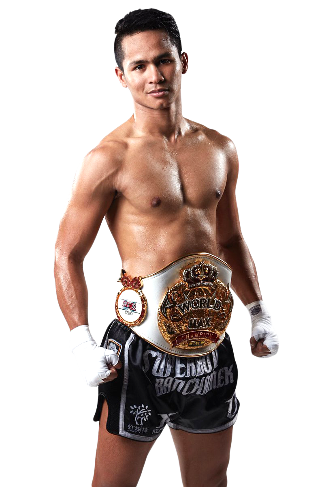

Лучшие кикбоксеры
Петросян Геворг
Рост: 178 см
Весовая категория: средняя
83 победы / 0 ничьих / 2 поражения
Итальянский спортсмен армянского происхождения, выступающий в кикбоксинге и тайском боксе. Двукратный победитель гран-при К-1 МАХ, победитель гран-при Glory World Series. Тренируется в клубе Satori Gladiatorium Nemesis под руководством тренера Альфио Романут.
Ситтичай Ситсонгпинонг
Рост: 174 см
Весовая категория: средняя
121 победа / 5 ничьих / 30 поражений
Тайский кикбоксер Муай Тай и действующий чемпион в легком весе. По состоянию на 1 ноября 2018 года он занимает первое место в мире по версии Combat Press.

Марат Григорян
Рост: 176 см
Весовая категория: лёгкая, средняя
55 побед / 1 ничья / 11 поражений
Армяно-бельгийский кикбоксер, выступающий в легком весе. Он известен своим техничным и агрессивным стилем боя. По состоянию на 1 ноября 2018 года он занимает третье место в мире по версии Combat Press.
Артур Кишенко
Рост: 180 см
Весовая категория: средняя
72 победы / 1 ничья / 12 поражений
Украинский кикбоксер, получивший прозвище «Белка». Он является многократным чемпионом мира и Европы по тайскому боксу среди любителей и носит звание заслуженного мастера спорта Украины. На профессиональном ринге Кишенко провёл более полусотни боёв, в большинстве из которых одержал победу, а его текущим наивысшим достижением является выход в финал турнира K-1 World MAX в 2008 году.
Робин ван Русмален
Рост: 169 см
Весовая категория: лёгкая, средняя
51 победа / 3 ничьи / 17 поражений
Голландский кикбоксер и боец ММА с прозвищем "Pokerface". Бывший чемпион Glory в полулегком и легком весе. По состоянию на 1 ноября 2018 года он занял 5-е место в мире по версии Combat Press.
Сегава Такеру
Рост: 169 см
Весовая категория: полулегкая
35 победа / 0 ничьич / 1 поражение
Японский кикбоксер, выступающий в K-1. Он считается звездой японской кикбоксинг сцены из-за очень агрессивного стиля боя. По состоянию на 1 ноября 2018 года он занимает первое место в мире в полулегком весе по версии Combat Press.
Артём Вахитов
Рост: 186 см
Весовая категория: тяжёлая
20 побед / 3 ничьи / 5 поражений
Российский спортсмен, выступающий в тайском боксе и кикбоксинге. Многократный чемпион России, многократный обладатель Кубка России, трёхкратный чемпион мира IFMA, четырехкратный чемпион Европы IFMA, финалист Первых Всемирных игр боевых искусств «СпортАккорд», победитель Вторых Всемирных Игр боевых искусств «СпортАккорд». Заслуженный мастер спорта России по тайскому боксу.

Рика́рдо Верху́вен
Рост: 196 см
Весовая категория: супертяжелая
50 побед / 1 ничья / 10 поражений
Голландский кикбоксер тяжёлой весовой категории, выступает на профессиональном уровне начиная с 2004 года. Известен по участию в турнирах таких организаций как К-1, SUPERKOMBAT, It's Showtime, Glory. Действующий чемпион Glory в тяжёлом весе.
Цю Цзяньлинь
Рост: 172 см
Весовая категория: лёгкая
49 побед / 0 ничьих / 7 поражений
Китайский Кикбоксер Муай Тай. Присоединился к Китайской национальной сборной Муай Тай в сентябре 2012 года. В октябре 2013 года вступил в бойцовский клуб Da Dong Xiang. По состоянию на 1 ноября 2018 года он занимает первое место в легком весе в мире по версии Combat Press.
Алекс Перейра
Рост: 194 см
Весовая категория: средняя, тяжелая
38 побед / 0 ничьих / 6 поражений
Бразильский кикбоксер, выступающий в средней весовой категории. Перейра получил известность, когда стал чемпионом WAKO Pro Panamerican в 2013 году. Он является действующим чемпионом WGP по кикбоксингу в тяжелом весе и Glory в среднем весе. По состоянию на 1 ноября 2018 года он занимает первое место в среднем весе в мире по боевой прессе.

Cупербон Банчамек
Рост: 177 см
Весовая категория: лёгкая, средняя
105 побед / 0 ничьиx / 34 поражений
Тайский кикбоксер из Бангкока. Супербон в настоящее время занимает первое место в рейтинге WBC World в полусреднем весе. По состоянию на 1 ноября 2018 года он занимает 4-е место в мире по версии Combat Press.